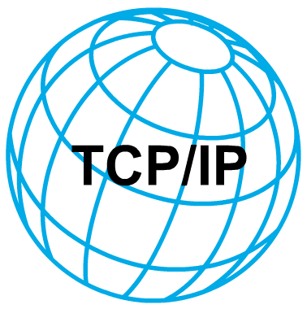

80's

1983
ARPANET cambió el protocolo NCP por TCP/IP.
1986
Surge NSFNET (National Science Foundation Network) para interconectar 5 grandes centros de supercomputación.
Los miembros de NSFNET fueron:
• Prinston
• Pittsbourgh
• UCSD.
• UIUC.
• Cornell.
1989
Integración de los protocolos OSI en la arquitectura de Internet, facilitando el uso de distintos protocolos de comunicaciones.